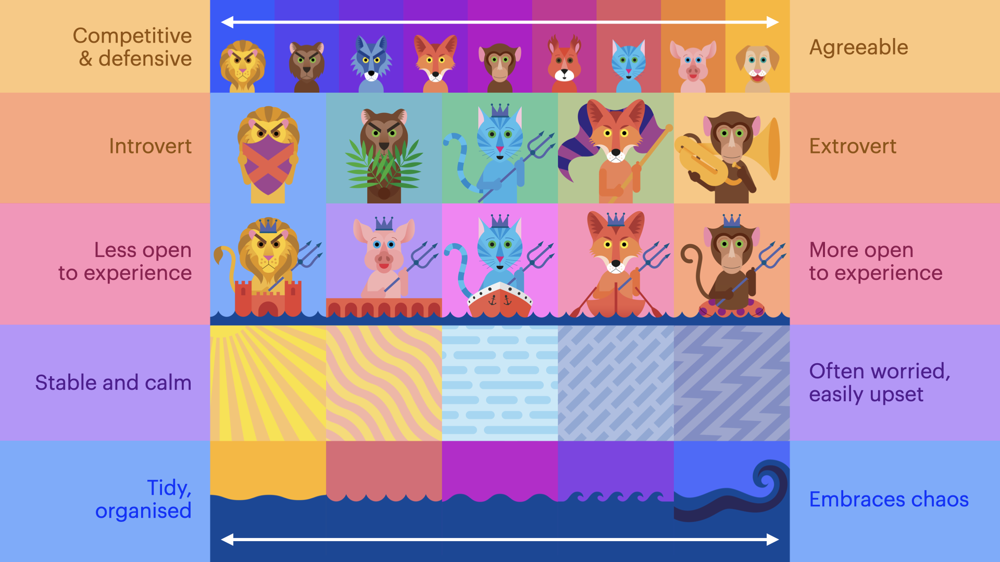

Passing ships
 2018 - 2019
2018 - 2019
 Musée maritime national, Londres, Royaume-Uni
Musée maritime national, Londres, Royaume-Uni
Ce projet de Stefanie Posavec, développé lors de sa résidence d'artiste au Musée maritime national de Londres, avait pour but de transformer les visiteurs du musée en une "flotte de navires" et de leur offrir une expérience d'auto-réflexion en leur créant un portrait unique. Durant ce projet, Stefanie Posavec a collaboré avec l'artiste Miriam Quick pour concevoir un sondage qui collectait des données démographiques et des traits de personnalité, y compris un mot d'auto-description. Sur une période de cinq jours, elles ont recueilli près de 600 réponses. L'œuvre finale est une série de 177 badges de navires, où des éléments graphiques étaient utilisés pour visualiser la personnalité des participants.


© Crédit : Stefanie Posavec